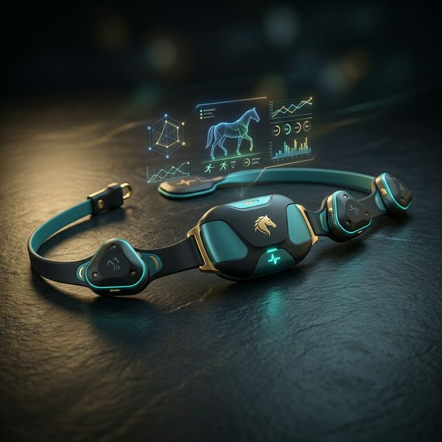
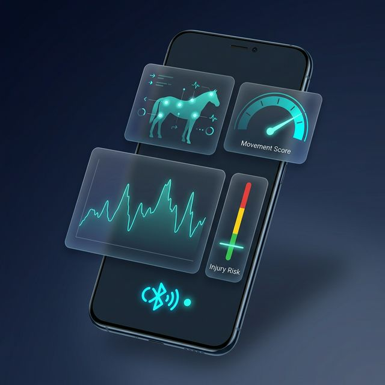

A cutting-edge wearable biosensor system for race horses — combining motion & cardiac monitoring with intelligent analytics to protect performance and prevent injuries.
Every year, thousands of race horses suffer preventable injuries because trainers lack real-time, objective data about biomechanical stress and cardiac health. EQUINNO changes that.
Micro-injuries and gait irregularities are often undetectable by human observation until it's too late.
Objective biosensor data empowers trainers to make informed decisions about training intensity and race readiness.
Early detection of biomechanical anomalies can prevent catastrophic injuries and extend competitive careers.
EQUINNO's pipeline is simple — wear, transmit, analyze, and act. Here's how we turn raw biosignals into actionable insights.
4 IMU sensors capture 9-axis motion data while an ECG sensor records cardiac rhythm — all in real-time during training or racing.
Data streams via Bluetooth Low Energy (BLE) to the companion mobile app with minimal latency and low power consumption.
Advanced algorithms on the mobile app process movement patterns and cardiac data to extract biomechanical features.
An overall movement score and injury risk level are generated — giving trainers clear, actionable insight at a glance.
Every component of EQUINNO is designed to deliver precision, comfort, and actionable intelligence.
Four strategically placed IMU sensors capture full-body biomechanics — covering all four limbs for comprehensive gait analysis.
A dedicated ECG sensor continuously records heart rhythm to detect arrhythmias, stress responses, and cardiovascular fitness levels.
Our algorithm fuses motion and cardiac data into a single, intuitive performance score — making complex data easy to understand.
Machine learning models analyze gait asymmetry, stride irregularities, and cardiac anomalies to flag early warning signs.
Low-latency Bluetooth Low Energy ensures reliable wireless data transfer from the wearable sensors to the companion app.
Designed to be worn comfortably during training and racing without interfering with the horse's natural movement.

Our sensor module is purpose-built for the equine biomechanics domain, combining multiple modalities into a single lightweight system.
Accelerometer + Gyroscope + Magnetometer per unit
Single-lead electrocardiogram for cardiac rhythm
Low power, high reliability wireless data streaming
Embedded MCU for signal conditioning and data packaging
The EQUINNO companion app processes raw sensor data in real-time and presents clear, intuitive dashboards with scores and alerts.
Real-time visualization of IMU and ECG data streams with interactive charts and graphs.
An overall biomechanical performance index computed from four-limb gait data and cardiac signals.
Automated warnings when abnormal patterns are detected — color-coded by severity level.
Track trends over time with historical data logs and performance progression charts.

Whether you're a trainer, veterinarian, researcher, or investor — we'd love to hear from you. Let's protect performance together.